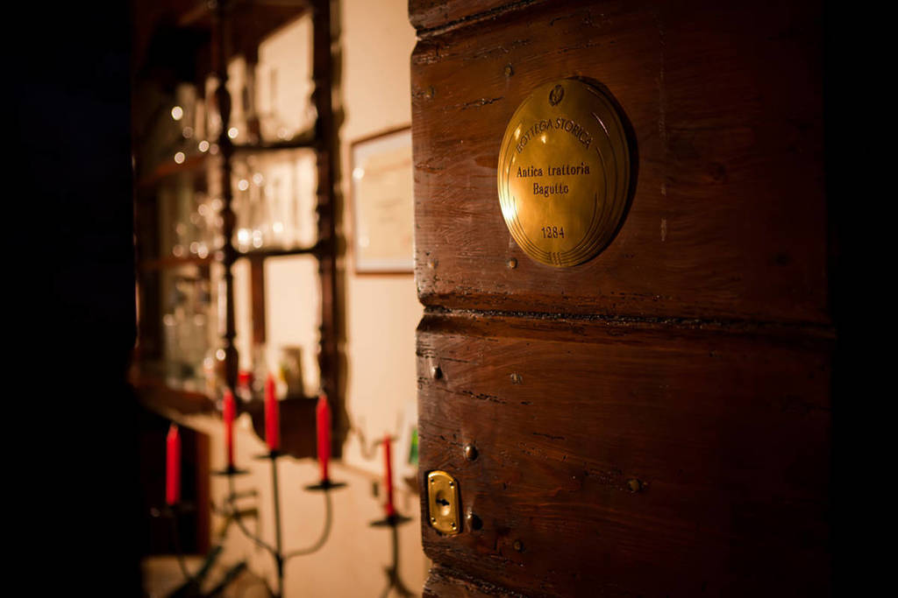

Bucătăria italiană are rădăcini antice, încă din perioada Imperiului Roman. Ingredientele simple precum grâul, uleiul de măsline și vinul erau esențiale.
În Evul Mediu, influențele arabe au adus paste și condimente noi. Mai târziu, roșiile au devenit baza multor preparate tradiționale.
Astăzi, Italia este renumită pentru pizza, paste și deserturi precum tiramisu. Fiecare regiune are propriile specialități unice.
| Preparat | Regiune | Ingredient principal | Tip |
|---|---|---|---|
| Pizza Margherita | Napoli | Roșii | Fel principal |
| Spaghetti Carbonara | Roma | Ouă | Fel principal |
| Risotto | Milano | Orez | Fel principal |
| Tiramisu | Veneto | Mascarpone | Desert |
